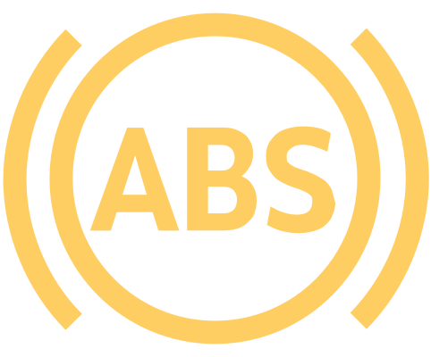
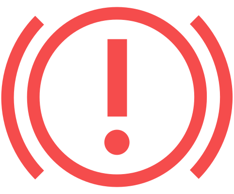
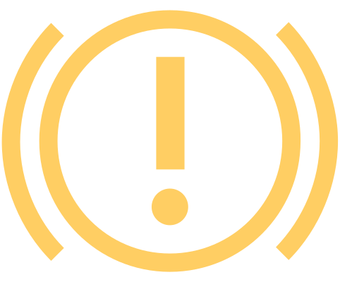

Défaut ESC ou ASR / arrêté par le système

allumé

Coupez et remettez le contact.
Si le voyant de contrôle ne s’éteint pas après avoir parcouru une courte distance, faire appel à un garage spécialisé.
ABS perturbé

allumé
Il est possible de continuer à conduire avec précaution. Faites appel à l’assistance d’un atelier spécialisé.
Système de freinage et ABS perturbés

brille avec
Ne reprenez pas la route ! Faites appel à l’assistance d’un atelier spécialisé.
Défaut du servofrein électromécanique
allumé
Ne reprenez pas la route ! Faites appel à l’assistance d’un atelier spécialisé.

allumé
Il est possible de continuer à conduire avec précaution. Faites immédiatement appel à l'assistance d'un atelier spécialisé.